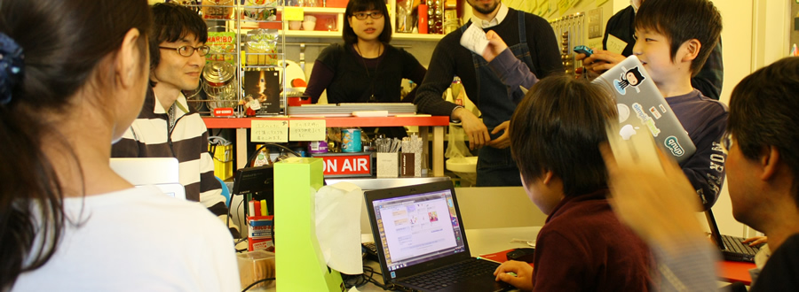

CoderDojoは小中学生のためのプログラミング道場

CoderDojo Tokyoでは、毎週日曜日、ボランティアによるプログラミング道場を開催しています。
お申込みは、こちらのFacebookイベントページから。
» Schedules
プログラマやデザイナ、エンジニアなど、ソフトやハードを作ることを専門にしている人たちです。こどものコンピュータ教育に携わる方、会場のOSSCafeの常連ボランティアさん他。
現在、WEBサイト制作中です。制作にご協力いただける方は、プルリクエスト下さい!